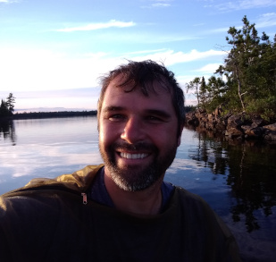
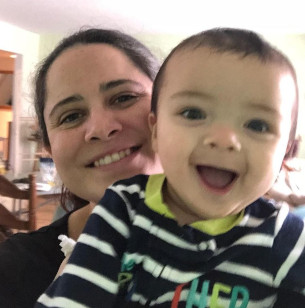
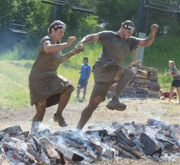
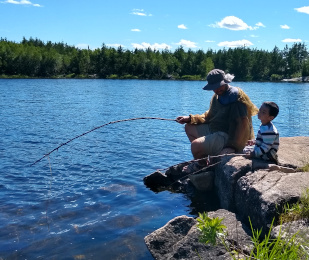
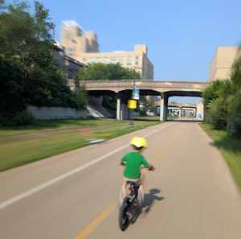
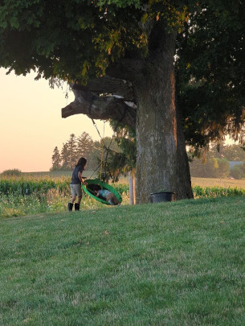
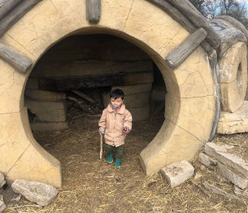
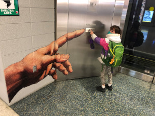
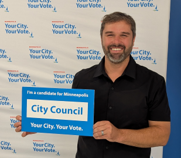

Hello, my name is Dan Orban and I am excited to run for Minneapolis City Council Ward 9 in the November 4, 2025 election.
I am not a politician, but I care about this city, and I am called to love everyone in it, especially those I do not agree with. I believe each and every one of us has a purpose and a role to play in revitalizing our neighborhood. This also includes those of our neighbors on the streets who struggle with addiction, intense poverty, and mental illness. It is time we rise above the fatalistic idea that we are merely destined to die. Let's find a reason for all of us to live, work, and play together. Ward 9 has been hit hard in the past few years. We are worn out and tired. Let's change the narrative for Minneapolis together!
As an independent, I tend to be both positive and pragmatic. We live in a real world where perfect solutions do not exist. We can, however, approach goods solutions with good local governance. This involves fixing and cleaning streets, funding core services, creating housing, and supporting small businesses. The main approach is simple: We need to get back to basics.
Here are a few practical examples of good governance that we can implement together:
Let's work together sharing our creative ideas for how to build a strong dynamic community of love for each other. As part of our efforts, we should innovate, creating meaningful work with our neighbors to engage everyone's talents. Let's encourage the meetings and subcommunities that keep our neighborhoods beautiful and connected. Let's stay motivated in picking up trash. Let's share our resources, buying ice cream for our friends and our enemies. Let's discourage the destruction of good and worthwhile things. We can rise to be fearless change agents through hard work, faith, hope, and love.
Dear community, as a City Council Representative, my duty is to meet the needs of Ward 9. My job as representative is not to push a political party's agenda or be swayed by lobbyists. The job is about hearing from all of you and working together. Therefore, feel free to disagree and argue with anything I write here. It is okay to disagree with my views. I welcome open discussion towards better goals. Often there are new ways to solve problems that have not yet been considered. I would rather be known as someone who listens more than someone who thinks he knows everything. Below are several positions I hold:

As a resident, these past years have been tough. The crime in our neighborhood has become normalized. Gunshots and sirens have become part of our nightly prayers. Most of us feel powerless to change our situation, and we do not know whom to turn to. Let's find ways together to implement a positive shared vision of ourselves and our community.
We need to redeem narrative of Minneapolis! - Let's take responsibility to make our neighborhood walkable, safe, and green. Let's find ways that our kids can play outside without fear and danger. Let's have more meetings with local neighbors of peace (residents, pastors, gardeners, local business owners, non-profit workers, public safety workers, and entrepreneurs) to develop a plan. We can work together to build something great that we can all be proud of, pushing out the evil that exists. We are better together.

I want us to work together! Unfortunately, our society has become politically and socially polarized. Below are some basic tenants of my platform that I hope will lead to unity:

We are failing to meet the needs of our neighbors and those of us living in encampments or open air drug markets across the city, especially in Ward 9. Living conditions include illegal activity, theft, drug dealing, public indecency, and prostitution. People continue to die from overdoses. This is unacceptable! In our neglect, we have failed to protect the people in our neighborhoods, while not providing adequate care for those in encampments.
We cannot be passive. People should not be dying in our streets or existing in poor unsanitary living conditions. We need a positive pro-human approach that provides hope and purpose, not despair and death. We need to actively engage and implement interventions to help our neighbors overcome their addictions and other challenges.
We must have long term care plans for their health. We need to invest into breaking up open air drug markets, into treatment for mental health and drug addiction, and into creating jobs that provide meaning. We should prioritize shelters and employ contingency management techniques. The problem is complex, so we need an organized multi-pronged approach that involves healthcare, housing, law enforcement, and social workers. We need to create policies and transparency to ensure each action area remains above reproach, utilizing the best ethical practices. We cannot be afraid of enforcing laws. Vital to success, we need built-in accountability and communication structures to ensure all the organizations that are involved are responsible for getting work done.
I acknowledge that this is a difficult problem to solve and we are actively working on it, but we must not give up. We must prioritize this even if it takes everyone in the city working together. We must be creative, courageous, loving, and hopeful.

I believe that thriving small businesses will grow and prosper a community. This includes residents, employers, and workers. Ward 9 is blessed with a diverse group of people from all over the world. Let's not lose our culture, but embrace the special place it is. Let's thrive because of the uniqueness of the local small businesses. We should encourage entrepreneurs to share their culture with others. Let's welcome the world and build something beautiful and purposeful.
To support our small businesses, we must first improve public safety. Small businesses need security to know that they are protected by local law enforcement. This is a basic need for both the employees and the business owners. Then we need to incentivize business development and creative entrepreneurs. More economic variability and vitality often leads to excitement and thriving economic corridors.

My daughter often asks me why there is so much trash in our neighborhood. She wishes that people would care more about taking pride in making our world and neighborhood more beautiful. The same goes for our city and the decisions we make to help the world flourish. The Earth is a gift and our lack of concern and care for it is unacceptable.
I am a believer in protecting and cultivating our environment. We should expand the programs that plant more gardens and create more walkable green areas. Biking and public transportation are important. Improving our transportation systems and making them clean, safe, and sustainable is a good goal to have. At the same time, we should be practical, observing the limitations that currently exist. Solutions should be balanced, pragmatic, and constructive. Let's not cause other unforeseen problems in our wake. In summary, we should incrementally work towards solutions together that cherish the world we live in.

With inflation and rent prices on the rise, it is important to make sure people can afford shelter to live.
I believe that by building more affordable public housing and increasing the number of clean safe shelters, we can improve the quality of life for everyone. It is great that city is working towards solutions here by creating more options for multi-family houses. Other potential solutions exist, but I do not support rent control due to many potential unexpected economic consequences (click "More Detail" below). We can work towards solutions by increasing housing supply and improving access to home ownership.
Rent control seems like a great idea at first glance. and the idea has its potential advantages in terms of stability and predictability for both the renter and owner. However, the lack of incentive for the owner to maintain the property and for builders to create new properties can encourage rapid decline and incentivize bad maintenance for the current renter. In the end, the owner may indirectly force the renter to leave, forcing them to pay higher rent when they move to their next place. Those have been some documented consequences.

It is becoming more difficult to engage in productive dialogue. We cannot lose the very conversations that make us human and give our lives meaning. Our culture has become polarized and fearful. We need to understand each other respectfully, caring for the truth, but in love.
We must discuss ideas and disagree with each other. We should exercise patience, love, hope, discernment, civility, and humility. Most importantly, there should be forgiveness for our misunderstandings. If we cannot forgive others, how can they forgive us for our offenses? No one is perfect, but at the same time, all people can learn how to be better. We need to bring back honest and kind dialogue. Let's bring back Minnesota nice!

We are quickly losing faith in public servants including government officials, health care workers, educators, scientists, and law enforcement officers. We must restore faith in these institutions to maintain a civilized society. Our protectors have made significant mistakes, so let's work together to repair what was lost.
Let's bring back the ancient virtues of good will, courage, honor, courtesy, justice, and a readiness to empower those in need. Public servants should be willing to lose their lives so that others can live. Let's venture beyond merely peacekeepers and raise up humble peacemakers. We need a meekness combined with a compassionate strength. We need wise leaders who are not afraid to protect their people. Let's also change the culture to encourage civil disagreements among our leaders. We can then challenge each other, strengthening each other into better public servants. We need to bring back the idea of sparring partners: iron sharpening iron.